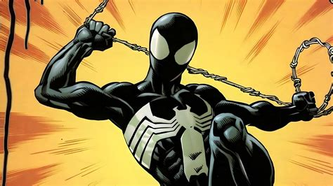
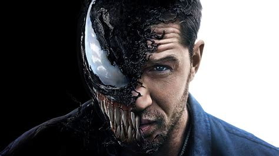
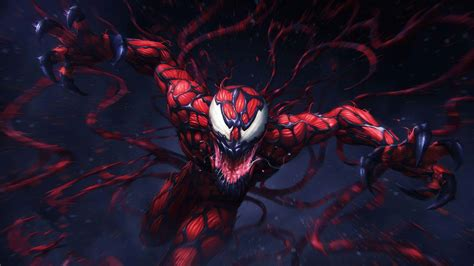
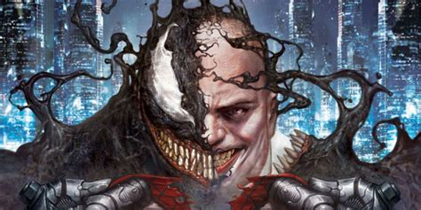

The Symbiotes were created by Knull, refered to as god of the symbiotes. They are from the planet Klyntar, a cosmic prison holding Knull and the Necrosword. The symbiote was first introduced in Secret Wars, as an alien suit, worn by Spiderman, and he then kept it for a few issues. He then found out it was enhancing his anger and making him more violent. When eventually separated, the symbiote bonded to Eddie Brock. Eddie then realises that Peter Parker is spiderman, due to the symbiote hive mind informing him. This leads into Eddie and the symbiote becoming the Vilain/Anti Hero Venom. The most famous symbiote.
What makes the symbiotes so dangerous is their adaptability. they have the ability to take overtake hosts, this allows them to survive. only if the host is compatable.
Another factor that makes them dangerous is the fact that thye are able to take powers from previous hosts, for example:
| Image | Description |
|---|---|
|  | Peter Parker, First host of the in many ubiverses. |
|  | Eddie Brock, most well known host for Venom |
|  | Carnage (Cletus Cassidy) murderous son of Venom |
|  | CyberVenom Kingpin weapon of mass destruction |